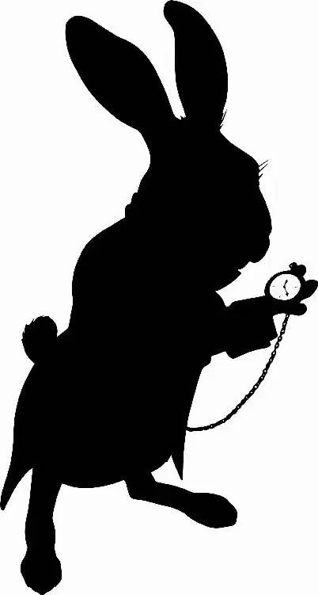

Mallymkun and the March Hare sprang to their feet, their faces hopeful, when she emerged. Behind a fretful McTwisp, the Tweedles clustered together with Bayard, and Mirana’s arms f loated out from her sides as she leaned forward expectantly. Alice felt the weight of her friends’ eyes on her.
“He doesn’t even know who I am,” she admitted mournfully.
At once, the group’s faces all fell. Alice bit her lip and trudged dejectedly away from the door. The Hatter had always been so conf ident in her, even when she wasn’t sure of herself. On her last trip to Underland, he’d insisted she was the Alice, the one they’d been waiting for, regardless of what anyone else said. Now he treated her like a stranger.
“What’s happened to him?” Alice asked.
“It’s as we feared.” Mirana’s voice trembled. “He’s caught a terrible case of the Forgettingfulness.”
“The Forgettingfulness?” Alice repeated as they headed into the village.
“It all goes back to the Horunvendush Day,” Mirana said. She stopped by a fountain and waved her hand over the water. In the spray, images of a fair ground with colorful booths and smiling people appeared.
“He has always somehow blamed himself for his family’s death,” Mirana continued as Alice recognized Hatter’s relatives in the scene.
In it, Zanik and Tyva Hightopp stood talking under an old oak tree. His cousins loudly raced past as his aunt and uncle paused next to a DRINK ME stall.
A trumpet blare announced the arrival of Mirana, who rode a white horse, the White Knight and Hatter following on foot behind her. Spotting his family, Hatter tentatively raised one hand to wave just as a dark shadow loomed overhead.
With a def iant shriek, the Jabberwocky dove out of the sky. It roared out a stream of f ire, lighting up booths and banners. Crackling sounds and smoke f illed the air.
As the White Knight charged forward to face the beast, Mirana’s horse reared in fright. Hatter lunged for the reins, jerked the horse around, and quickly led it and Mirana away from the clearing. F lames swallowed up the fairground.
When Hatter returned to look for his family, he had only found ashes.
The image faded and the White Queen turned to Alice with a grave expression. “And he has lived ever since with the weight of their loss,” she said.
Manifesting just over Mirana’s shoulder, Chessur’s bright green eyes f licked toward Alice. “So you see, dear Alice, like a tree, our present problem has its roots in the past ...” he said.
“I see,” Alice murmured. “I think.”
“Which is why we were hoping you might go back into the past and save the Hatter’s family,” Mirana said, sweeping her hands together and pulling them to her chest.
“Go back in time? But how?” Alice asked. She’d never considered such a thing before. If it was possible—oh, if it was—there were so many moments she’d like to relive! She could see her father again, maybe save him, too. Although, perhaps it was a magic that worked only in Underland.
“The Chronosphere,” Chessur said.
“I’m sorry,” Alice said. “The Chrono-what?” “The Chronosphere. It’s the heart that powers Time. Legend has it, it lets one travel across the Ocean of Time,” Mirana explained.
“But why me?” Alice asked, turning back to Mirana.
“None of us can use it because we’ve already been in the past. And if your past self sees your future self ...” Mirana’s voice trailed off.
“Yes?” Alice said, nudging. “What happens if your past self sees your future self?”
“Well, no one actually knows,” Mirana admitted. “But we know it’s catastrophic.”
“It sounds dangerous. And complicated,” Alice said.
Chessur popped into the air next to Alice’s shoulder, startling her. “It’s not impossible, merely unpossible,” he said.
Alice paused for a moment, but there was really nothing to think about. “Hatter is Underland, and Underland is Hatter. If he is in need, I will help him, no matter what.”
Smiling, Mirana took Alice’s hands. “We rather hoped you might say that.”
As far as Alice was concerned, there was no time to lose. The quicker she could get started, the quicker they’d get their beloved Hatter back. “And where exactly is this ‘Chronosphere’?” she asked.
“In the hands of Time, of course,” Chessur purred.
“Well, I suppose all things are,” Alice said. “But where is it now?”
“In the hands of Time,” Mirana repeated. “It’s his.”
Alice blinked. “I’m sorry. Time is a ‘he’?”
Her friends nodded.
“So,” Alice said to Mirana, “where does Time spend himself?”
Mirana turned and led Alice and the others into Marmoreal Castle. They walked for some time, winding up and down stone stairways and past abandoned tapestries, until they came to a part of the castle Alice had never seen before. The room they entered had a black-and-white marble f loor, the tiles spiraling to the center, where the only object in the room stood, tall and imposing.
It was an enormous black grandfather clock whose ticks and tocks echoed loudly in the space. The sound was oddly ominous.
Drawing closer, Alice saw that the clock was bound in dozens of old ropes. Mirana approached it warily, as if the clock might swallow her whole.
“He lives in a void of inf initude. In a castle of eternity. Through here.” Mirana gestured at the clock as she spoke. “One mile past the pendulum.”
The White Queen waved her hands in the air. “Opening time!” she said. As her f ingers traced intricate patterns in front of her, the ropes around the clock began to twist and unravel. Alice gasped as they lifted outward little by little, revealing themselves to be thousands of white butterf lies. They swirled around her before f luttering out the far window. Turning to Mirana, Alice raised one eyebrow in an unspoken question.
“Keeps the riffraff out,” Mirana said with a shrug. She dug into a pocket of her white dress and drew out a brass key. Carefully, she f itted it into the front of the clock’s glass door.
“Everyone, get ready,” she said.
And then she turned the key.
As the door opened, a f ierce vacuum sucked at the air in the room, pulling it into the clock. Mallymkun clutched at the March Hare’s kerchief to keep from being tugged in as well. Even Alice was drawn a step closer to the clock and had to kick her legs apart to brace herself.
Just as quickly as the wind had begun, it fell off. Tentatively, Alice approached the ornate wooden frame of the clock and peered in past the pendulum.
There was no light, just an inf inite stretch of darkness. Alice shivered.
Alice turned to see everyone bunched together, anxious smiles on their faces. Well, she wasn’t going to accomplish anything by waiting and worrying. She faced forward again, ready to begin.
Mirana reached out, her hand stopping Alice.
“Time is extremely powerful and apparently quite full of himself,” the White Queen warned. “So mind your manners. He is not someone you want as your enemy.”
Alice bit her lip. No, she did not want to be on Time’s bad side. After nodding f irst at Mirana, then at the others, she ducked into the clock. As she stepped inside, she heard Bayard call out, “Fairfarren, Alice!” But she dared not look back.
